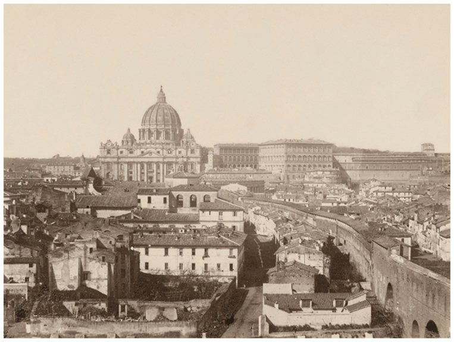
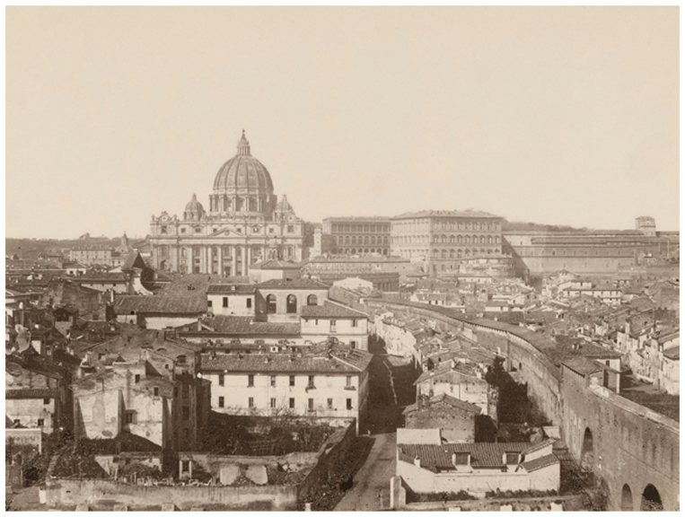
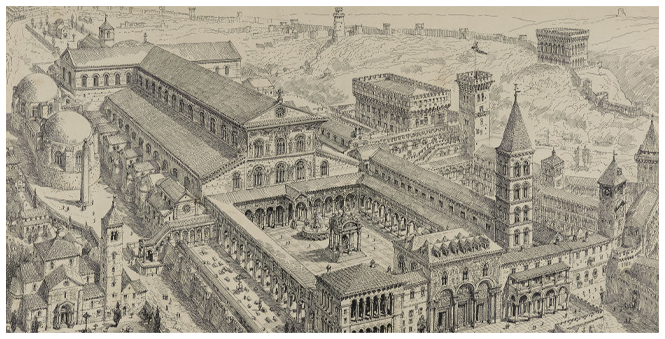
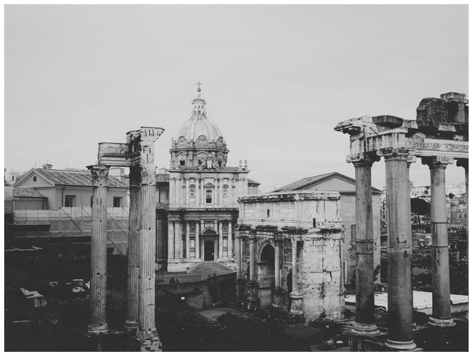
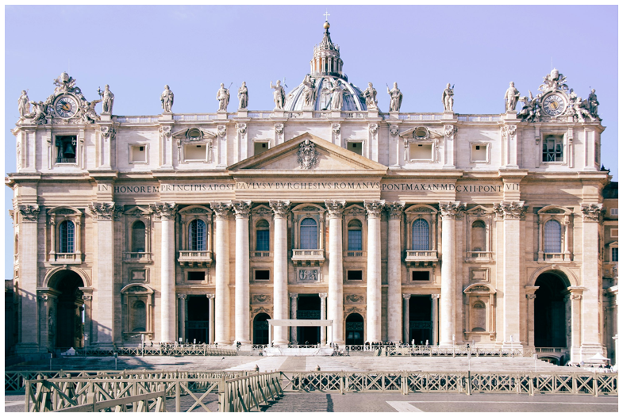
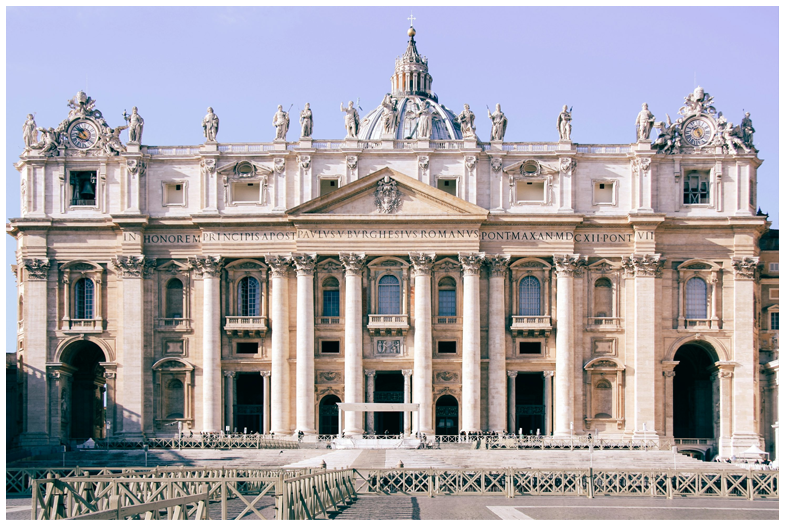

HOW IT WAS BUILT
St. Peter’s Basilica was built to replace the original church created by Emperor Constantine in the 4th century.
Construction began in 1506 under Pope Julius II, and the building process continued for more than 120 years.
Major architects contributed to its design: Bramante planned the structure, Michelangelo redesigned the dome, Carlo Maderno created the façade, and Bernini designed the grand St. Peter’s Square.
The church was built using strong materials like marble, travertine stone, and precious metals.


 Click to see more info
Click to see more info
 
